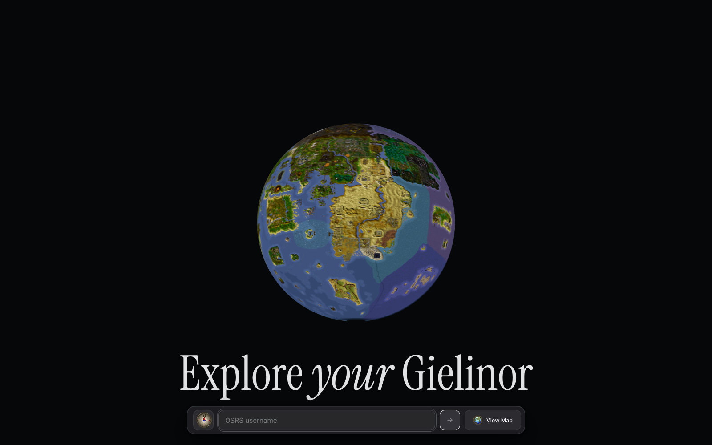
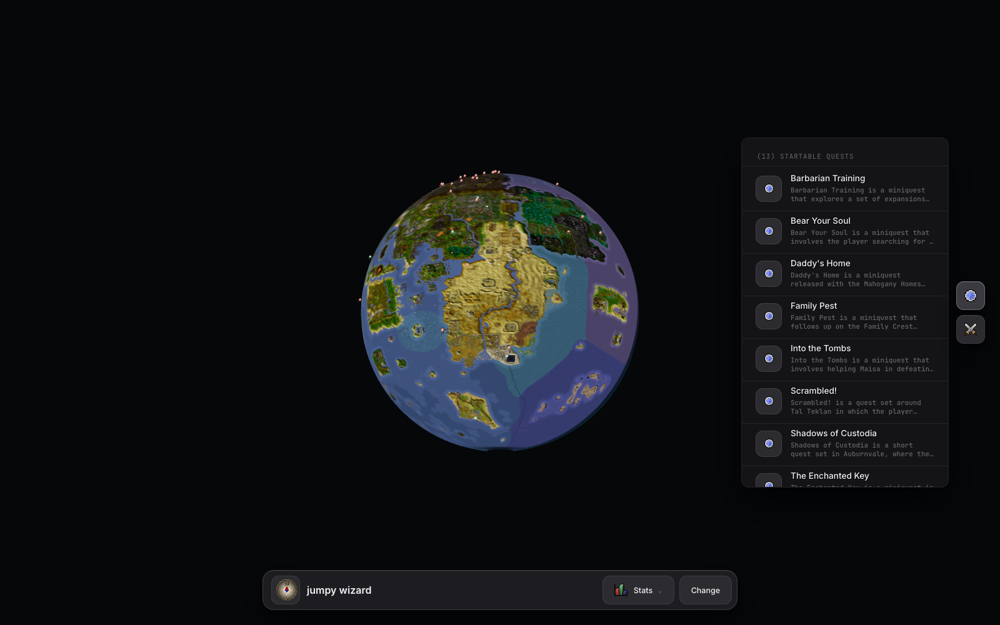

Impulse
I wanted a map of Gielinor that felt less like opening a wiki page and more like looking at a place.
That was the whole impulse really. I spend a lot of time in Old School RuneScape bouncing between tabs: the world map, the wiki, quest requirements, boss pages, account stats. It works, but it has that slightly fragmented feeling where the information is all technically available and still somehow not in the same room.
So I started building The Observatory.
Globe

Shape
The first version in my head was probably too simple: take the OSRS world map, put it on a plane, drop some markers on it, call it a day. But that missed the thing I actually wanted. I did not want another flat map. The interesting part was the feeling of pulling back far enough that Gielinor becomes a little object, then diving back into it when you care about a specific place.
That is where the globe came from.
The awkward bit is that OSRS is not a planet. It is a finite game map made of map squares, regions, cache data, missing edges, instanced oddities, and a lot of things that were never designed to be wrapped around a sphere. There is no real east-meets-west continuity. There is no hidden geography beyond the edge. It is just a game world with bounds.
I spent a surprising amount of time on that fact.
Cache
The scene generation starts from the OSRS cache, via rs-map-viewer and an OpenRS2 cache build, then exports map-square geometry into public/osrs-scene/osrs-238_2026-06-03. The generated output is not one neat file. It is a manifest, overview textures, a texture atlas, and thousands of little binary chunks: positions, colours, indices, UVs, texture indices. The app uses the overview texture while you are far away, then streams the chunk meshes when you move closer.
That part was interesting actually, because it made the app feel more like a tiny map engine than a React page. The React bit is mostly the shell. The real object is the scene: Three.js, React Three Fiber, a custom globe-to-plane projection, a camera rig, and a bunch of generated data that needs to appear at the right moment without making the first load ridiculous.
Seam
The first big visual problem was the seam.
When you wrap a finite OSRS map texture around a globe, there is a dark vertical gap where the texture runs out. I tried the obvious thing first: make the texture wrap-safe by duplicating a strip from one side into the empty padding on the other side. Technically it worked. Visually it was weird. The back of the globe started showing repeated geography that implied the world continued when it did not.
Then I tried making the empty strip more ocean-coloured. That was also almost right, and still wrong. It made the gap less black, but it turned the edge into a strange blue band. One of those fixes where the bug is gone and your eye immediately finds the fix instead.
So I backed that out.
That is something I keep relearning with visual work. Sometimes the correct answer is not to hide the artefact harder. Sometimes the artefact is telling you something true about the underlying model. Gielinor does not wrap. The better version was not pretending it did.
Deployment
The second big problem was deployment, and that one was less philosophical.
Locally, everything worked. The generated chunks sat in public/osrs-scene/osrs-238_2026-06-03/chunks, the app streamed them when you zoomed in, and the player lookup endpoint could fetch and parse OSRS hiscores/wiki-ish data. Then I put it on GitHub Pages and immediately hit the shape of a static host.
The lookup route could not run there. Of course it could not. GitHub Pages was serving static files, so the app tried to fetch JSON from an API route that did not exist and got HTML back. That produced the very glamorous error: Unexpected token '<', "<!DOCTYPE "... is not valid JSON.
So I made the app honest. On the static build, player lookup is disabled with a real message instead of a broken JSON parse. GitHub Pages can show the map, but it cannot be the whole product.
Vercel fixed the API side, but not the chunk side.
The chunks were about 8.1GB across 7,680 files. That is not something I wanted to push through Vercel as part of every deployment, and it is definitely not something GitHub Pages wanted in an artefact. For a minute I pointed the app at raw GitHub URLs, which is the kind of solution that feels clever until the browser starts trying to fetch hundreds of binary files and you remember that raw GitHub is not a CDN.
So the final shape became: Vercel for the app and API, Cloudflare R2 for the heavy map chunks.
R2
That made the architecture click into place. The app loads from Vercel. The overview texture and manifest are small enough to live with the app. But when the camera gets close enough to need real geometry, the browser fetches chunk binaries from a Cloudflare Worker in front of an R2 bucket. The Worker is deliberately boring: GET, HEAD, OPTIONS, CORS headers, long cache headers, and object lookup by path. The exciting part is that there is no exciting part.
I uploaded all 7,680 files to R2, verified the live Worker URLs were returning HTTP 200, then changed NEXT_PUBLIC_OSRS_CHUNK_ROOT to point at:
https://observatory-osrs-chunks.faooful.workers.dev/osrs-scene/osrs-238_2026-06-03
After that, Vercel deployments went back to being tiny. The browser still gets the close-up data, but Vercel does not carry the 8.1GB around.
Account

Markers
The player layer was the other half of the idea. I did not just want a pretty object. I wanted the map to react to an account.
The lookup flow lets me type an OSRS username, fetch the account state, and then turn that into map markers for things that are available. Right now the strongest version of that is quests and bosses. You search for a player, the app works out what can be started, and the map gets little pins where those activities live.
There is something satisfying about that, because it changes the map from a reference into a lens. The same geography means different things depending on the account. A quest marker is not just "this exists here". It is "this is available to you now".
That is the part I want to keep pushing.
Where it landed
There are still rough edges. The globe seam is still a compromise. The close-up transition needs more tuning. The static GitHub Pages version is useful but intentionally limited. And the whole thing is sitting on a very specific generated OSRS cache snapshot, osrs-238_2026-06-03, which is great for determinism and less great if I want it to track the live game forever.
But I like where it landed.
The thing that changed over the build was my sense of what the project was. I started with "can I put the OSRS map on a globe?" and ended up with a small streaming map system, a deployment split between Vercel and R2, and a UI that can make Gielinor feel personal to an account.
Which is very much how these agent-assisted projects tend to go for me. The first prompt is usually too small. Then the real work starts appearing in the gaps: the seam, the deployment limit, the static API route, the 8GB folder that absolutely should not be in the app host, the difference between a marker and a useful recommendation.
That is the bit I enjoy.
Not the magic of asking for a thing and receiving a finished product. It was not that. It was more like having enough momentum to keep following the next problem as it appeared, without the project collapsing under the weight of its own fiddly details.
And now there is a little globe of Gielinor sitting in the browser.
That still feels worth it.
Credits
I should say the credits part plainly, because this only works because a lot of other people have made OSRS data and web graphics tooling usable in the first place.
The game world, names, art direction, and underlying Old School RuneScape material belong to Jagex. The cache snapshot came from the OpenRS2 Archive, specifically the kind of cache and XTEA-key preservation work that makes experiments like this possible without scraping a live client. The scene export leaned heavily on dennisdev/rs-map-viewer, which already does the hard work of exploring current and historical RuneScape maps.
The account and activity layer pulls from a few community/public sources too: the official OSRS hiscores endpoint, WikiSync for quest state when a player has shared it, the Old School RuneScape Wiki API for quest and page data, the OSRS Wiki real-time prices API, and Explv's Map as an open-source coordinate-map reference.
The rendering side is built on Three.js, React Three Fiber, and Drei. The app itself is Next.js, deployed on Vercel, with the big generated chunk files served from Cloudflare R2 through a small Cloudflare Worker. GitHub Pages is still there as the static version, which is useful in its own more limited way.
That list matters. The Observatory is a little thing I made, but it is very much sitting on top of a community map, a preserved cache, a very generous wiki ecosystem, and a web graphics stack I did not have to invent.